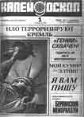
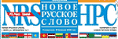
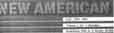
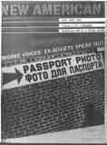
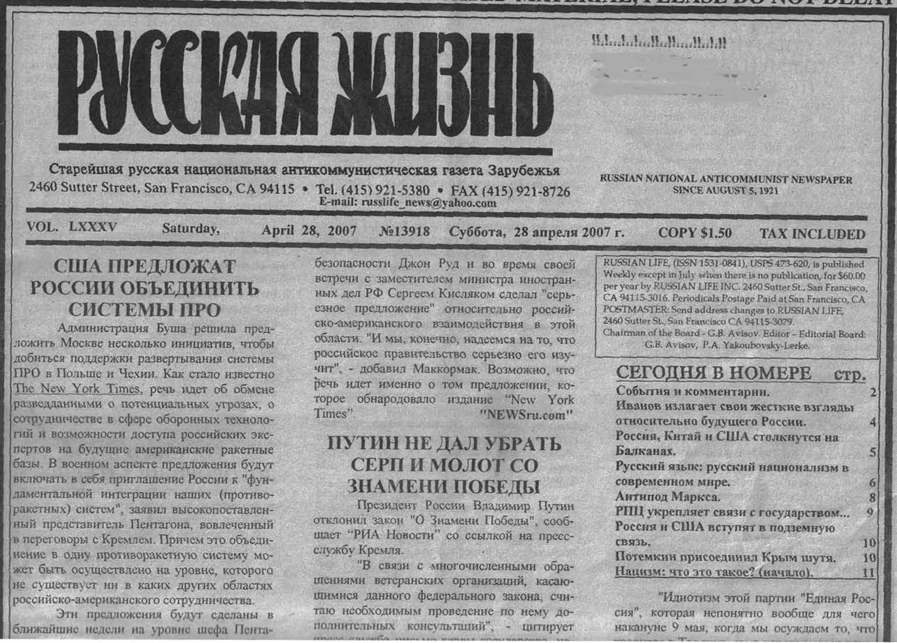
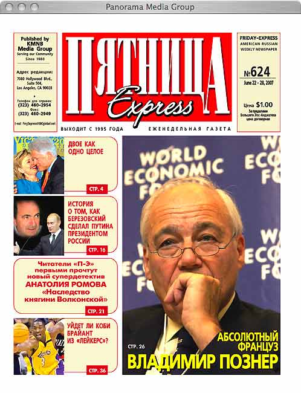
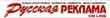
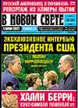

Newspapers of The Third Wave
Russians in America: The Third Wave
Newspapers
Голос России
Printed in early 1980s. Any information available?
Kaleidoskop (Калейдоскоп)

Issue #1, Feb 9, 1983. Intended as a Russian
language weekly. 40 pages in an 8 1/2 by 11" format. Edited by Al'fred
Tul'chinskii, The Kaleidoscope, 114-41 Queens Blvd, Suite 166, Forest Hills,
NY 11375 (212) 897-7465 took materials from English language newspapers
and translated them into Russian. Part of the issue was a translation of
The Berlin Memorandum
by Adam Hall. By issue No 5 the address had changed to Suite 205 in same
house. Aleksandr Orlov (Александр Орлов) was now listed as advertising manager. Berkeley had
NO 1-8. The Library of Congress lists this serial as continuing until 1999,
and is listed as one place where issues are stored. 1983, 1 (Feb. 9, 1983)-;
Ceased in July 1999.; v. :; ill. ; 25 cm.
Language: Russian. A Russian language weekly that emerges in New York with
issue 1, February 9, 1983. Forest Hills, N.Y. 1983-1999. Weekly, 1983-1998,
Monthly, 1998- Ceased in July 1999.

Новое Русское Слово
The New Russian Word, the oldest Russian language newspaper in the United States, has published continuously since 1910. During the 1970s and early 1980s the paper was under the leadership of Andrei Sedykh (Андрей Седых) who was also instrumental in the Literary Fund in support of struggling Russian writers. Sedykh has published his memoirs in Russian, and they have been reprinted in that country. The present editor in chief, Valeri Weinberg (Валерий Вайнберг) has been with the paper since the late 1960s and was witness to the changes that came with the new influx of Russians in the 1970s and 1980s. Newspapers, for those who have the time, provide perhaps the best source of documenting people, publishing events, the entire social milieu of Russians in America, and those events that shaped their collective consciousness. NRS is available in a complete run on microfilm, making it an invaluable resource for historians and literary scholars. Today NRS continues to publish daily and supports an active web site: www.nrs.com. Valery Weinberg who presides over the paper is a rich source of historical memories of the Third Wave. Ayer (1975) cites circulation at 26,307. By 1984 its circulation was reported as 43,000.
Новый Американец
Certainly one of the most original efforts by participants in The Third Wave was the launching of Новый Американец. НА began publishing in New York in February of 1980 and continued on a weekly basis with issues up to 199 until December of 1983, when it moved to Jersey City and continued from issue 200 until issue 298 (Nov.6, 1985). There is a note that it continued as serial in January and February of 1986. It was officially billed first as "America's only Russian language weekly," <May 9-18, 1980>., then "American Jewish Russian language weekly," <Nov. 5-11, 1980>., and later still "America's only Jewish Russian Language weekly." For a good portion of that time the intellectual leadership was provided by Sergei Dovlatov (Сергей Довлатов) and his friends and fellow writers/critics Sasha Genis (Саша Генис) and Peter Vail (Пётр Вайль). They reached out to a new audience, set a new tone, used a language developed in the Soviet Union but now open to new themes and new possibilities. Genis has gone so far as to describe this a re-invention of the Russian language, an invigoration of stultified "Soviet speak". One of the urgent tasks of today should be to compile a complete run of the paper. The microfilm that does exist has some important gaps. Access to the actual newspaper itself is severely limited and the holdings in those libraries that permit access are in themselves incomplete. A newspaper НА (yes the abbreviation) from Jersey City continues Новый Американец from issue 200-(December 22, 1983) to issue 298 (November 6, 1985)

New American

By 1986 this "America's Only Russian-English Monthly Journal replaces Новый Американец which it claims goes back to 1980. The issue Vol. 1, No 1 (Jan., Feb. 1986) is also noted as issue #299 of its predecessor.
Новый Свет
A weekly published for two months in New York by a break away group from Новый Американец. It folded when Dovlatov and others returned to Новый Американец. There were eight issues beginning with 24-20 October 1981. The issues were numbered singly and also as alternatives to Новый Американец. Thus Issue 1 (89) and issue 8 (96) conclude the series when by issue #97 of Новый Американец, the editors returned .

Новая Газета
There are so many New Gazettes in the world that one must exercise caution in locating the New York issue. Edited in the years 1980 -1983 by Yevgeny Rubin (Евгений Рубин) is listed as the Chief Editor with Yuri Shtein (Юрий Штейн) and Pavel Dembo (Павел Дембо) as assistants. Shtein appears to have been charged with the literary sections. Contributors included Maksimov (Максимов) and Nekrasov (Некрасов), as well as Boris Paramanov (Борис Параманов). Sergei Gollerbach (Сергей Голлербах) graced the two page graphic-pictorial section more than once. A regular contributor was the photographer Shalamov (Шаламов). НГ appealed to and was aimed at the newly arrived immigrants. Pages were devoted to dealing with the realities of American (mainly New York) life. An attempt was made to link the Third Wave with earlier waves of Russians in the section called Muse of the Diaspora (Муза диаспоры). In this weekly column the editors celebrated such luminaries as Marina Tsvetaeva (Марина Цветаева) and Vladimir Nabokov (Владимир Набоков), but also lesser poets and prosaists. The 32 page weekly also spent considerable time reprinting earlier works of the emigration and in bringing Russian translations of American prose writers and poets. Most of these issues are available on microfilm, but no complete run of the paper appears available to scholars.
Новости
The paper Новая газета was succeeded by Новости which existed from September 1983 to April 1984, first as an attempt at a daily, but soon reverted to weekly, due to lack of ad revenue, a break in and apparent theft of a subscriber list in February 1984, and conflict that had Pavel Paley (Павел Палей) release Evgeny Rubin (Евгений Рубин) and replace him with Anatoly Antohin.
Панорама
A weekly published in Los Angeles since 1908 by Aleksandr Polovets (Александр Половец). This newspaper is one of the survivors of the Third Wave. Just as many publications are connected with a name, Panorama is inseparable from Aleksandr Polovets.
Православная Русь
(Jordanwille) according to Ayer Directory of Publications (Philadelphia: 1975) In 1975 it had a circulation of 2500.
Русский Голос
Published in San Francisco a West Coast version of Новое Русское Слово. 1975 circulation 1680 (Ayer 1975).
Русская Жизнь

Published in San Francisco as weekly since 1963. Ayer claims this was a daily in 1975 (?). The publication continues today from the Russian Center of San Francisco. The papers masthead calls it Russian National Anti-Communist Newspaper since August 5, 1921. Their major emphasis focuses still on First and Second wave immigrants. 1975 circulation 2400 (Ayer 1975).1990s
Еврейский Мир . [in Bremen]. Claimed to be the "Only Russian Jewish Weekly Newspaper in America." Vol. II, 21 (65), August 20-27, 1993. 25 cents. Published by Congregation of Russian Jews, 338 3rd Avenue, Brooklyn, NY 11215 (718) 488-9555. www.yevmir.com [no longer active] Editor in chief Aryeh Katzin. 24 pages. By Vol. VI, 21 (275), August 29, 1997, touted as "The Largest Russian Jewish Weekly Newspaper in America." Editor is David Guy, now at 548 8th Avenue, 6th Floor, NY 10018 (21) 220-8637. Now 72 pages last issue seen IX, 558 (5 February 2003) 72 pages now at 1100 Coney island Avenue, Brooklyn, NY 11203. Publisher is Ilya Brodsky (Илья Бродский), editor in Chief Aryeh Katzin, was last listed as a Dean of Sinai Academy in Brooklyn, ed. Lilya Kossovskaya (Лиля Косовская).
Кстати. A San Francisco newspaper and club. [One issue in Bremen]. No 308 (21-27 December 200?) free. Editor in chief Nikolai Sundeev (Николай Сандеев). 24 pages, been publishing since 1994.
Международная Мессианская Газета Vol. III, 14 (August 1996). Chicago. [One issue in Bremen]. International Messianic Newspaper. Contact Anna Portnow, 300 West Hill, Apt. 187, Chicago IL 60610 12 pages.

Пятница Express 49 (283) (8-14 December 2000). [Bremen has one issue]. Los Angeles, 7060 Hollywood Blvd. Suite 9191, LA, CA 90028 (323) 931-8786. Note that paper has been published since 1995. Editor in Chief Arnold Melnik (Арнольд Мельник). 40 pages. Published by Panorama Media Group
Papers of the Boulevard
Newspapers Today
Today on the streets of Brighton Beach (a neighborhood in the borough of Brooklyn of New York City) you can purchase almost a dozen Russian language newspapers published in the United States. Most are dismissed as simply vehicles for the advertisements and personal ads of the Russian speaking community. I have been unable to find anyone or any institution that is systematically collecting these papers (although a look at the NRS newsroom reveals a few). Many appear and then disappear. Some have websites. While they are available for sale at modest prices in Brighton Beach and other Russian communities, my attempts to subscribe to them ended in complete failure and lack of the courtesy of a reply. Most exist on the basis of advertisements, or are local editions of larger papers. Those mentioned here represent my best attempt to gather them in one place, but do not include survivors from the 1980s such as Новое Русское Слово or Панорама.
I have been unable to identify if any did exist in the 1980s. (John Glad lists a few). They too would form another puzzle piece to complete our picture of the time and people.
Alef. 78 Pearl St, Manhattan, NY, 10005 Phone: 212-943-9690
ARGUMENTY I FAKTY. Аргументы и Факты
501 Fifth Ave., Suite 1612, New York, NY, 10017, Phone: (212) 557-1321
2620 East 18St., Brooklyn, NY, 11235, Phone: (718) 615-1210,
718-368-2348
“Vecherniy New York” is a community-oriented newspaper with a cosmopolitan vision. It serves the needs of over a half a million residents of the New York Metropolitan Area, and has a strong distribution and readership throughout the Continental United States. Published by Lesti Publishing Corp. since the fall of 1995,
718 421-9091 61 Bay Ridge Avenue, Suite 6, Brooklyn, NY 11220

Новый Меридиан. 718-339-0706
Комсомольская Правда. 718-368-2348

"Starting from 1995 the newspaper 'V Novom Svete' gives its readers in the USA (New York, California, Illinois, Washington, Florida and other States) and Canada the opportunity to be aware of sensational world news, discussions, scandals and makes them familiar with exclusive interviews, culture news, sport. V Novom Svete is the most popular weekly newspaper in the Russian community of the USA (New York, California, Illinois, Washington, Florida) and Canada. We are one of the 75 newspapers published world-wide by the biggest media holding Moskovsky Komsomoletz."
A larger list of Russian language newspapers is found in the Russian American Yellow Pages.
In the 1980s the Soviet Union was apparently distributing for free a weekly newspaper Голос Родины. [Does anyone in the United States have it?] The newspaper is cited in the Большая Советская Энциклопедия.
Newspapers
Almanac-Panorama, Los Angeles, CA. Monthly: 1980.
Dyiia Posliedyiia Novosty (News of Recent Events), Paris, France. Daily: 1927.
Griadushchee (Грядущее, The Future), Sydney, Australia. Monthly: 1956-1957.
Kazak (Казак, Cossack), Neuilly-sur-Seine, France. Monthly: 1951-1953, 1955, 1957-1964, 1971-1976. Includes some French.
Light of Orthodoxy, Pittsburgh, PA. Monthly: 1962, 1964-1965, 1967-1968. English.
Lubov (Любовь, Love), Mayfield, PA. Bi-monthly (monthly): 1924-1957. (Microfilm: 1924-1957).
Nashe Vremia (Наше Время, The Modern Time), San Francisco, CA. Weekly: 1953.
Nashi Dni (Наши Дни, Our Days), Bryte, CA. Weekly: 1967-1969.
Novaia Zaria (Новая Заря, New Dawn), San Francisco, CA. Daily: 1948, 1953, 1962.
Novoe Russkoe Slovo (Новое Русское Слово, New Russian Word), New York, NY. Daily: 1941-1944, 1951-1979.
Novy Mir (Новый Мир, New World; merged with Russky Golos, Русский голос), New York, NY. Daily, tri-weekly, weekly: 1911. (Photocopy. (Microfilm: 1911-1919, 1926-1938).
Orthodox America, Etna, CA. Monthly: 1984. English.
The Orthodox Church, New York, NY (previously published in Philadelphia, PA). Ten issues a year: 1965-1976. English.
Posliedniia Novosti (Последние новости, Latest News), Paris, France. Daily: 1927.
Possev (Посев, Sowing), Frankfurt am Main, West Germany. Weekly: 1947-1949, 1954, 1964.
Pravda (Правда, The Truth), Philadelphia, PA. Weekly, bi-weekly, monthly: 1943, 1945, 1952-1954, 1960-1961, 1963-date. (Microfilm: 1917-1975). Includes English.
Pravoslavny Amerikanski Viestnik (Православный Американский Вестник, Orthodox American Herald; title varies: Russko-Amerikanski Pravoslavny Viestnik, Русско-Американский Православный Вестник), New York, NY. Semi-monthly. (Microfilm: 1896-1897). Includes English.
Rossiia Zagranitzei (Россия Заграницей, Outside Russia), New York, NY. Quarterly (?): 1965. Includes English.
Rossiya (Россия, Russia), New York, NY. Semi-weekly: 1942-1943, 1952, 1955, 1958-1963, 1965-1973.
Russkaia Mysl'; La Pensée Russe (Русская Мысль, Russian Thought), Paris, France. Weekly: 1948, 1953, 1955-1957, 1961, 1963-1964, 1971.
Russkaia Zhizn' (Русская Жизнь, Russian Life), San Francisco, CA. Daily (except Sundays, Mondays, and holidays): 1962, 1964-1975, 1977.
Ruskii Emigrant (Русский Эмигрант, The Russian Emigrant), New York, NY. Weekly: 1912-1914.
Russko-Amerikanski Pravoslavny Viestnik (Русско-Американский Православный Вестник, Russian American Orthodox Messenger; title varies: Pravoslavny Amerikanski Viestnik, Православный Американский Вестник), Jackson Heights, Long Island, NY. Semi-monthly. (Microfilm: 1896-1942). Includes English.
Russky Golos (Русский Голос, Russian Voice), New York, NY. Weekly: 1945, 1963-date.
Svit (Свет, The Light), Wilkes-Barre, PA (previously published in Philadelphia, PA). Bi-monthly (weekly, bi-monthly): 1911-1915, 1917-1924, 1927-1928, 1931-1944, 1946-1947, 1958, 1965-date. (Microfilm: 1908, 1911-1924, 1927-1928, 1931-1944, 1946-1948, 1953-1954, 1965-1971, 1973-1975). Includes English.
Vestnik Russkago Studencheskago Khrystiankago Dvizheniia; Le Messager (Вестник Русского Студенческого Христианского Движения, Herald of the Russian Student Christian Movement), Paris, France. Monthly. (Microfilm: 1931).
Za Vozvrashcenie na Rodinu (За Возвращение на Родину, For Return to the Motherland), Berlin, East Germany. Frequency varies: 1955-1960.
Who, What, Where and When?
Internet Links
Другие Ссылки
 Ad copy ad copy ad copy. Ad
copy ad copy.
Ad copy ad copy ad copy. Ad
copy ad copy.
Headlines
Headline full story...
Headline full story...
Headline full story...
Headline full story...